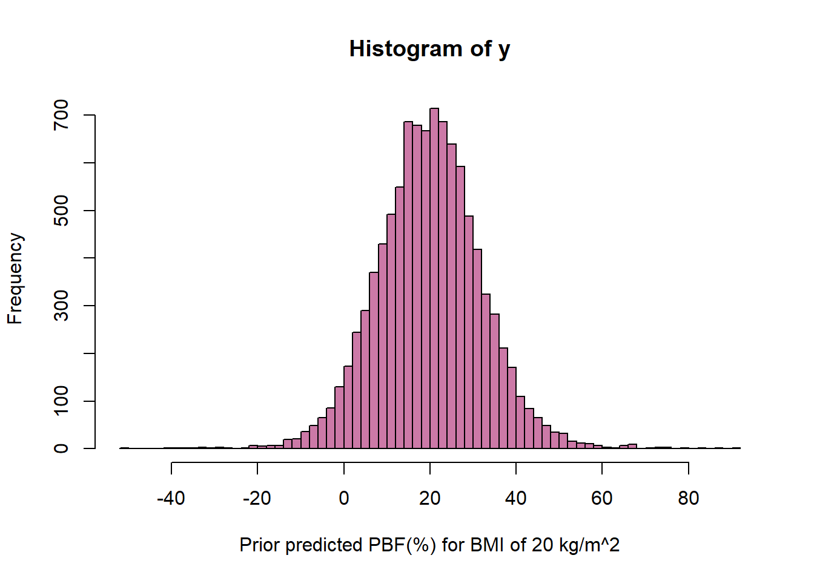
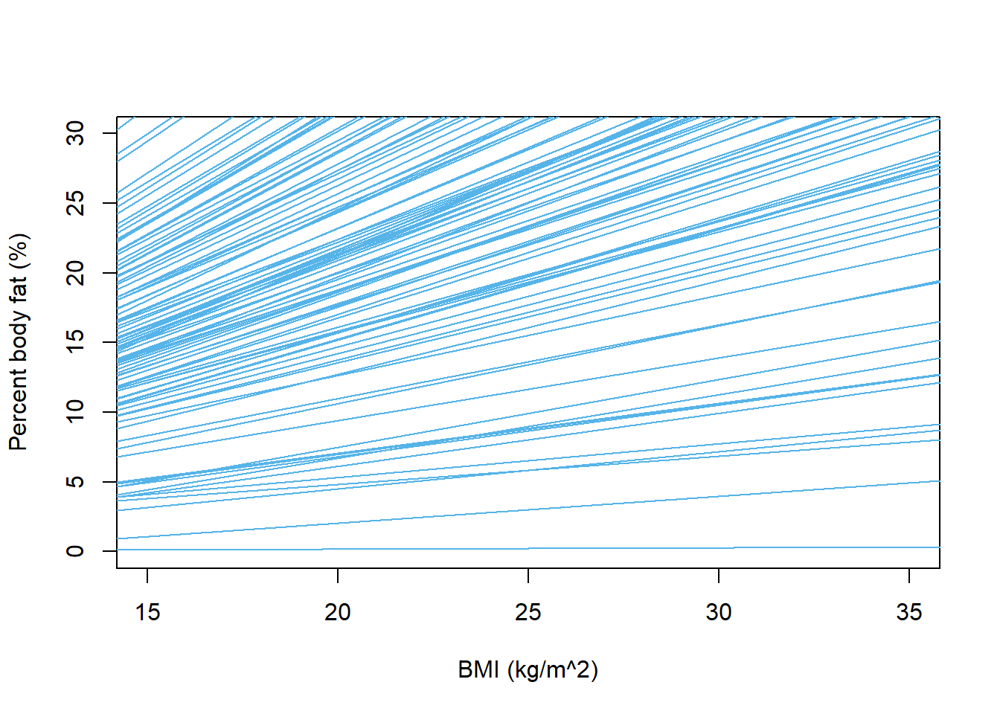
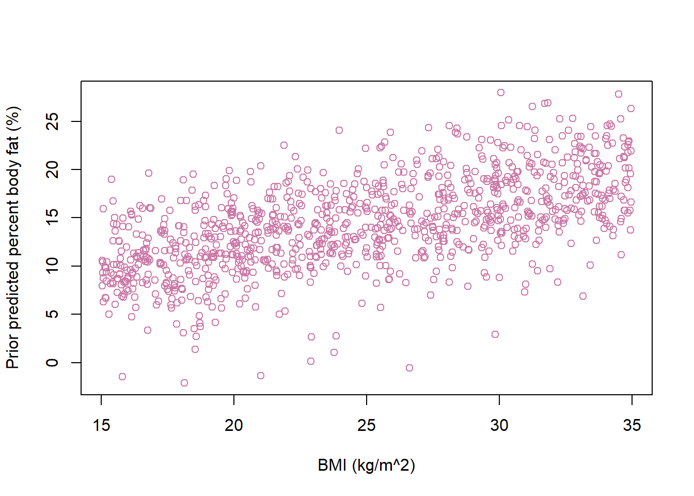
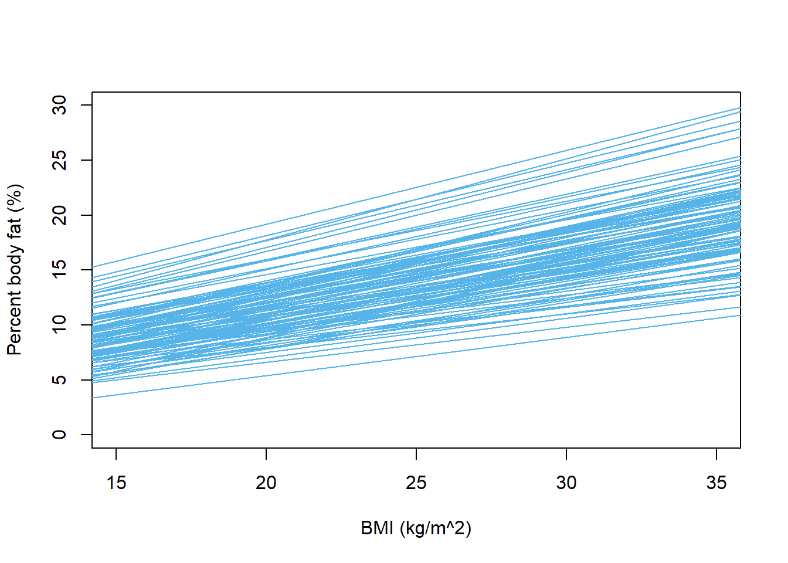
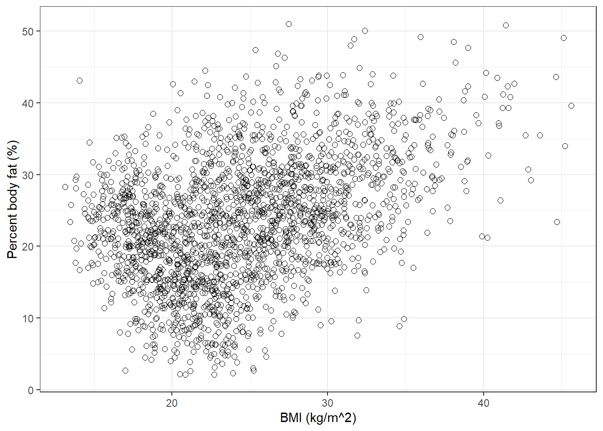
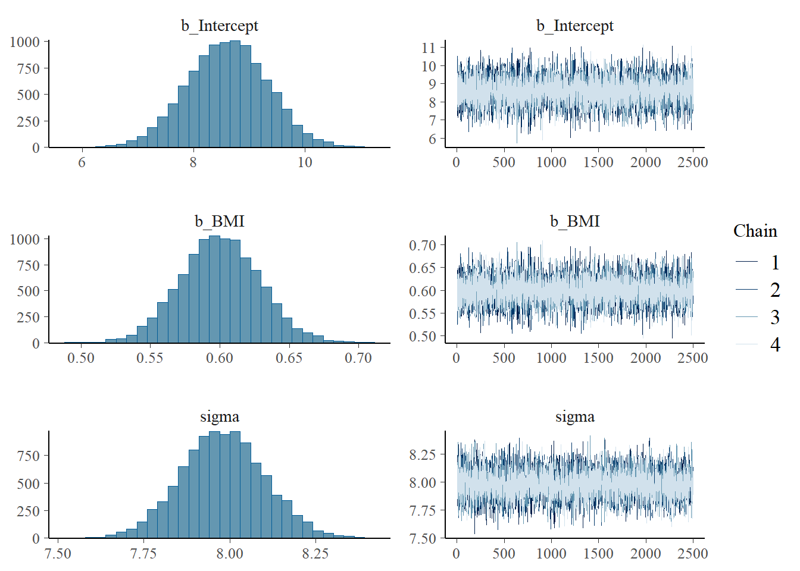
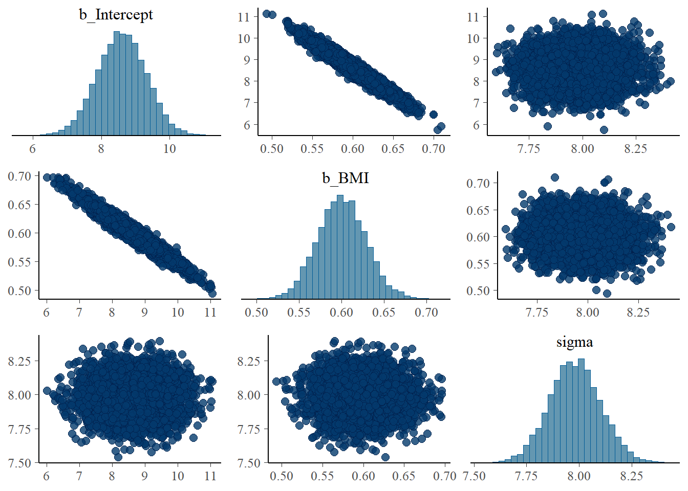

Regression is one of the most widely used statistical techniques for modeling relationships between variables. We will now consider a Bayesian treatment of simple linear regression. We’ll use the following example throughout.
Percent body fat (PBF, total mass of fat divided by total body mass) is an indicator of physical fitness level, but it is difficult to measure accurately. Body mass index (BMI), which is easily computed based on height and weight (\(\text{BMI} = \frac{\text{weight in kg}}{\text{(height in m)}^2}\)), is another commonly used measure1. What is the relationship between BMI and percent body fat? How can we use a person’s BMI to estimate their percent body fat?
Example 23.1 Consider the assumptions of a Bayesian simple linear regression model for predicting percent body fat from BMI.
What are the assumptions of the simple linear regression model? (There are many different regression models. We’re referring to the one that is usually the first one you see in introductory statistics. Sometimes the assumptions are summarized with the acronym “LINE”.)
What are the parameters in the model? That is, what do we need to put a prior distribution on (in order to eventually get a posterior distribution given sample data)? What do the parameters represent in context?
Suggest a prior distribution. Explain your reasoning.
Describe in full detail how you would simulate the prior predictive distribution of percent body fat for males with a BMI of 20.
Simulate the prior predictive distribution of percent body fat for a range of BMI values. Do the distributions seem reasonable? If not, experiment with different priors until you find one that produces a reasonable prior predictive distribution.
Consider data on a numerical response variable \(y\) and a numerical explanatory (or predictor) variable \(x\). A simple linear regression model of \(y\) on \(x\) assumes:
Linearity: the conditional mean of \(y\) is linear in \(x\); for some slope \(\beta_1\) and intercept \(\beta_0\): \[
\text{E}(y|x) = \beta_0 + \beta_1 x
\]
Independence: \(y_1,\ldots, y_n\) are independent2
Normality: for each \(x\), the conditional distribution of \(y\) given \(x\) is Normal
Equal variance: the conditional variance of \(y\) does not depend on \(x\)\[
\text{Var}(y|x) = \sigma^2
\]
The regression model is conditional. That is, we make assumptions about and perform inference for the conditional distribution of the response variable \(y\) given values of the explanatory variable \(x\). Therefore, even when we technically have a sample of pairs \((x_i,y_i)\) from a bivariate distribution, we will always condition on the values of \(x\) and treat them as non-random.
Linearity is an assumption: we assume there is some “true” population regression line\(\beta_0 + \beta_1 x\) which specifies the conditional mean of the response variable for each value of the explanatory variable.
The above set of assumptions can be stated more compactly as \[
y_i \sim N\left( \beta_0 + \beta_1 x_i, \sigma^2\right), \text{ and } y_1, \ldots, y_n \text{ are independent}
\] Equivalently, \[
y_i = \beta_0 + \beta_1 x_i + \varepsilon_i, \text{ where } \varepsilon_i, \ldots, \varepsilon_n \text{ are i.i.d. } N(0, \sigma).
\]
The parameters of the above model are \(\beta_0\), \(\beta_1\), and \(\sigma\).
\(\sigma_y^2\) denotes the variance of the response variable \(y\) with respect to its overall mean, while \(\sigma^2\) denotes the variance of values of the response variable about the true regression line. Thus, \(\sigma^2 = (1-\rho^2)\sigma^2_y\), where \(\rho\) is the population correlation between the explanatory and response variables.
Example 23.2Section 23.1.3 summarizes the sample data. Before fitting a Bayesian model, we’ll examine the usual frequentist results.
Find and interpret the slope of the fitted regression line.
Find and interpret a 95% confidence interval for the slope of the regression line. (How do you interpret 95% confidence?)
Find the equation of the fitted regression line.
Find and interpret the fitted value for men with a BMI of 20 kg/m2.
Find and interpret a 95% confidence interval based on the fitted value for men with a BMI of 20 kg/m2.
Find and interpret a point estimate of \(\sigma\).
Find and interpret a 95% prediction interval for men with a BMI of 20 kg/m2.
Example 23.3 Now we’ll fit a Bayesian model and find the posterior distribution.
Suppose there are just two observations of (BMI, PBF): (15, 20) and (40, 30). How would you compute the likelihood?
Use brms to fit the model to the full sample data. Run some diagnostic checks; does the MCMC algorithm seem to be working efficiently?
Inspect the joint posterior distribution of \(\beta_0\) and \(\beta_1\). What do you notice? Why do you think this happens?
Now suppose we replace BMI (\(x\)) with its centered version (\(x - \bar{x}\)). What does the parameter \(\beta_0\) represent in this model? Suggest a prior distribution for \(\beta_0\) (considering it in isolation).
Use brms to fit the model using centered BMI as the explanatory variable. Inspect the joint posterior distribution of \(\beta_0\) and \(\beta_1\). What do you notice? Why do you think this happens?
Example 23.4 Now we’ll summarize and report conclusions based on the posterior distribution, using the model with centered BMI.
Describe the posterior distribution of \(\beta_1\). Find and interpret 50%, 80%, and 98% posterior credible intervals for \(\beta_1\).
What does the parameter \(\mu_{20} = \beta_0 + \beta_1(20 -\bar{x})\) represent in context? Explain how you could approximate the posterior distribution of \(\mu_{20}\). Then approximate the posterior distribution, describe it, and find and interpret a 98% posterior credible interval for \(\mu_{20}\).
Describe the posterior distribution of \(\sigma\). Find and interpret 50%, 80%, and 98% posterior credible intervals for \(\sigma\).
Compare the results of the Bayesian and frequentist analyses. How are they similar? How are they different?
Example 23.5 Now we’ll use the fitted model to predict percent body fat.
Explain how you could approximate the posterior predictive distribution of percent body fat for men with a BMI of 20 kg/m2.
Find and interpret a 95% posterior prediction interval for men with a BMI of 20 kg/m2.
Compare the 95% posterior prediction interval with the corresponding frequentist 95% prediction interval. How are they similar? How are they different?
Suggest how you could perform a posterior predictive check. Then use software to perform the check. Does the model seem reasonable based on the data?
There are a number of ways the assumptions of the simple linear regression model could be revised.
We could assume the mean of \(y\) changes with \(x\) is a non-linear way (e.g., quadratic).
We could assume distributions other than Normal in the likelihood. For example, we could assume a \(t\)-distribution if outliers were an issue.
We could assume the conditional variance of \(y\) also changes with \(x\).
We could include multiple explanatory variables \(x\).
Each of the above would be a change in the likelihood, perhaps introducing additional parameters.
Example 23.6 Now we’ll investigate sensitivity of the results to choice of prior. Rerun the model (using centered BMI) but let brms choose the prior. Compare the results of the two Bayesian models; are the results very sensitive to the choice of prior?
23.1 Notes
23.1.1 Prior predictive tuning
We’ll start with a prior distribution under which \(\beta_0\), \(\beta_1\), and \(\sigma\) are independent.
The overall range of percent body fat is about 6% to 30%, but we would expect less variability among men of the same BMI. If we assume percent body fat varies by about 5 percentage points among men of the same BMI, we can choose a prior for \(\sigma\) that has a mean of 5, say Exponential(1/5) (to reflect \(\sigma>0\)).
We expect a positive association between percent body fat and BMI, so we want a prior for \(\beta_1\) that places most of its credibility on positive values. Disregarding measurement units, the two variables take values on fairly similar numerical scales (6 to 30, 15 to 35). For the slope \(\beta_1\), we might assume a Normal prior with a mean of 1 and a standard deviation of 0.5 (to keep most of the credibility on positive values, reflecting prior belief in positive association).
The intercept \(\beta_0\), in principle, represents the percent body fat for a man with a BMI of 0, so we might assume a Normal prior with a mean of 0 and a standard deviation of 1 (to put most of the prior credibility near 0). (We’ll see another way to think about this parameter soon.) In summary, our prior distribution on the parameters \((\beta_0, \beta_1, \sigma)\) assumes
\(\beta_0\), \(\beta_1\), and \(\sigma\) are independent
\(\sigma \sim\) Exponential(1/5)
\(\beta_1\sim\) Normal(1, 0.5)
\(\beta_0\sim\) Normal(0, 1)
Prior predictive distribution for BMI of 20
n_rep =10000# value of xx =20# simulate parameters from prior distributionbeta0 =rnorm(n_rep, 0, 1)beta1 =rnorm(n_rep, 1, 0.5)sigma =rexp(n_rep, 1/5)# simulate values of percent body fat based on assumptions of regression modely =rnorm(n_rep, beta0 + beta1 * x, sigma)hist(y, xlab ="Prior predicted PBF(%) for BMI of 20 kg/m^2",breaks =100,col = bayes_col["prior_predict"])

Prior predictive distribution for many values of BMI
n_rep =1000# a range of values of xx =runif(n_rep, 15, 35)# simulate parameters from prior distributionbeta0 =rnorm(n_rep, 0, 1)beta1 =rnorm(n_rep, 1, 0.5)sigma =rexp(n_rep, 1/5)# simulate values of percent body fat based on assumptions of regression modely =rnorm(n_rep, beta0 + beta1 * x, sigma)# scatter plot or prior predicted valuesplot(x, y,xlab ="BMI (kg/m^2)", ylab ="Prior predicted percent body fat (%)",col = bayes_col["prior_predict"])
What regression lines might look like according to prior distribution
# number of lines to plotn_lines =100# blank scatterplot - just set the plot area and scaleplot(x, y, xlab ="BMI (kg/m^2)", ylab ="Percent body fat (%)", type ="n",xlim =c(15, 35),ylim =c(0, 30))# plot each of the simulated lines# using slope and intercept simulated from prior distributionfor (l in1:n_lines){abline(beta0[l], beta1[l], col = bayes_col["prior"], lwd =1)}

23.1.2 Prior predictive distribution
After some tuning, our prior distribution on the parameters \((\beta_0, \beta_1, \sigma)\) assumes
\(\beta_0\), \(\beta_1\), and \(\sigma\) are independent
\(\sigma \sim\) Exponential(1/1.5)
\(\beta_1\sim\) Normal(0.5, 0.1)
\(\beta_0\sim\) Normal(2, 2)
Prior predictive distributions
n_rep =1000# a range of values of xx =runif(n_rep, 15, 35)# simulate parameters from prior distributionbeta0 =rnorm(n_rep, 2, 2)beta1 =rnorm(n_rep, 0.5, 0.1)sigma =rexp(n_rep, 1/1.5)# simulate values of percent body fat based on assumptions of regression modely =rnorm(n_rep, beta0 + beta1 * x, sigma)# scatter plot or prior predicted valuesplot(x, y,xlab ="BMI (kg/m^2)", ylab ="Prior predicted percent body fat (%)",col = bayes_col["prior_predict"])

# number of lines to plotn_lines =100# blank scatterplot - just set the plot area and scaleplot(x, y, xlab ="BMI (kg/m^2)", ylab ="Percent body fat (%)", type ="n",xlim =c(15, 35),ylim =c(0, 30))# plot each of the simulated lines# using slope and intercept simulated from prior distributionfor (l in1:n_lines){abline(beta0[l], beta1[l], col = bayes_col["prior"], lwd =1)}

23.1.3 Sample data
data =read_csv("nhanes_males.csv")
Rows: 2157 Columns: 2
── Column specification ────────────────────────────────────────────────────────
Delimiter: ","
dbl (2): BMI, PBF
ℹ Use `spec()` to retrieve the full column specification for this data.
ℹ Specify the column types or set `show_col_types = FALSE` to quiet this message.
data |>head() |>kbl() |>kable_styling()
BMI
PBF
20.65
13.1
21.46
31.9
26.76
24.9
26.41
23.5
15.46
25.2
23.90
7.2
c(summary(data$BMI), SD =sd(data$BMI))
Min. 1st Qu. Median Mean 3rd Qu. Max. SD
13.140000 20.150000 23.800000 24.449907 28.100000 45.610000 5.688115
c(summary(data$PBF), SD =sd(data$PBF))
Min. 1st Qu. Median Mean 3rd Qu. Max. SD
2.100000 17.400000 23.500000 23.432313 29.200000 51.000000 8.704317
cor(data$BMI, data$PBF)
[1] 0.3981832
data_plot =ggplot(data, aes(x = BMI, y = PBF)) +geom_point(shape =1, size =2) +labs(x ="BMI (kg/m^2)",y ="Percent body fat (%)") +theme_bw()data_plot

23.1.4 Frequentist results
freq =lm(PBF ~ BMI, data)summary(freq)
Call:
lm(formula = PBF ~ BMI, data = data)
Residuals:
Min 1Q Median 3Q Max
-21.2198 -5.5169 0.2299 5.4232 26.0046
Coefficients:
Estimate Std. Error t value Pr(>|t|)
(Intercept) 8.53437 0.75906 11.24 <2e-16 ***
BMI 0.60933 0.03024 20.15 <2e-16 ***
---
Signif. codes: 0 '***' 0.001 '**' 0.01 '*' 0.05 '.' 0.1 ' ' 1
Residual standard error: 7.986 on 2155 degrees of freedom
Multiple R-squared: 0.1585, Adjusted R-squared: 0.1582
F-statistic: 406.1 on 1 and 2155 DF, p-value: < 2.2e-16
Loading 'brms' package (version 2.23.0). Useful instructions
can be found by typing help('brms'). A more detailed introduction
to the package is available through vignette('brms_overview').
Attaching package: 'brms'
The following objects are masked from 'package:tidybayes':
dstudent_t, pstudent_t, qstudent_t, rstudent_t
The following object is masked from 'package:stats':
ar
library(tidybayes)library(bayesplot)
This is bayesplot version 1.14.0
- Online documentation and vignettes at mc-stan.org/bayesplot
- bayesplot theme set to bayesplot::theme_default()
* Does _not_ affect other ggplot2 plots
* See ?bayesplot_theme_set for details on theme setting
Attaching package: 'bayesplot'
The following object is masked from 'package:brms':
rhat
fit <-brm(data = data,family =gaussian(), PBF ~1+ BMI,prior =c(prior(normal(2, 2), class = Intercept),prior(normal(0.5, 0.1), class = b),prior(exponential(0.667), class = sigma)),iter =3500,warmup =1000,chains =4,refresh =0)
Compiling Stan program...
Start sampling
summary(fit)
Family: gaussian
Links: mu = identity
Formula: PBF ~ 1 + BMI
Data: data (Number of observations: 2157)
Draws: 4 chains, each with iter = 3500; warmup = 1000; thin = 1;
total post-warmup draws = 10000
Regression Coefficients:
Estimate Est.Error l-95% CI u-95% CI Rhat Bulk_ESS Tail_ESS
Intercept 8.60 0.72 7.20 9.99 1.00 10059 7435
BMI 0.60 0.03 0.55 0.66 1.00 10239 7616
Further Distributional Parameters:
Estimate Est.Error l-95% CI u-95% CI Rhat Bulk_ESS Tail_ESS
sigma 7.98 0.12 7.75 8.22 1.00 10922 8170
Draws were sampled using sampling(NUTS). For each parameter, Bulk_ESS
and Tail_ESS are effective sample size measures, and Rhat is the potential
scale reduction factor on split chains (at convergence, Rhat = 1).
plot(fit)

pairs(fit)

mcmc_dens_overlay(fit, pars =vars(b_Intercept, b_BMI, sigma))
23.1.6 Posterior distribution, model using centered BMI
data = data |>mutate(BMI_c = BMI -mean(BMI))
fit_c <-brm(data = data,family =gaussian(), PBF ~1+ BMI_c,prior =c(prior(normal(18, 2), class = Intercept),prior(normal(0.5, 0.1), class = b),prior(exponential(0.667), class = sigma)),iter =3500,warmup =1000,chains =4,refresh =0)
Compiling Stan program...
Start sampling
summary(fit_c)
Family: gaussian
Links: mu = identity
Formula: PBF ~ 1 + BMI_c
Data: data (Number of observations: 2157)
Draws: 4 chains, each with iter = 3500; warmup = 1000; thin = 1;
total post-warmup draws = 10000
Regression Coefficients:
Estimate Est.Error l-95% CI u-95% CI Rhat Bulk_ESS Tail_ESS
Intercept 23.39 0.17 23.05 23.73 1.00 8456 6517
BMI_c 0.60 0.03 0.54 0.66 1.00 11548 7352
Further Distributional Parameters:
Estimate Est.Error l-95% CI u-95% CI Rhat Bulk_ESS Tail_ESS
sigma 7.98 0.12 7.75 8.22 1.00 9201 7129
Draws were sampled using sampling(NUTS). For each parameter, Bulk_ESS
and Tail_ESS are effective sample size measures, and Rhat is the potential
scale reduction factor on split chains (at convergence, Rhat = 1).
posterior_predict simulates a sample of size 2157, using the observed \(x\) values, for each of the 10000 simulated triples from the posterior distribution, resulting in a 10000 x 2157 matrix.
Warning: Using `size` aesthetic for lines was deprecated in ggplot2 3.4.0.
ℹ Please use `linewidth` instead.
ℹ The deprecated feature was likely used in the bayesplot package.
Please report the issue at <https://github.com/stan-dev/bayesplot/issues/>.
Family: gaussian
Links: mu = identity
Formula: PBF ~ 1 + BMI_c
Data: data (Number of observations: 2157)
Draws: 4 chains, each with iter = 3500; warmup = 1000; thin = 1;
total post-warmup draws = 10000
Regression Coefficients:
Estimate Est.Error l-95% CI u-95% CI Rhat Bulk_ESS Tail_ESS
Intercept 23.43 0.17 23.09 23.76 1.00 9860 7258
BMI_c 0.61 0.03 0.55 0.67 1.00 9646 7651
Further Distributional Parameters:
Estimate Est.Error l-95% CI u-95% CI Rhat Bulk_ESS Tail_ESS
sigma 7.99 0.12 7.75 8.23 1.00 10509 7583
Draws were sampled using sampling(NUTS). For each parameter, Bulk_ESS
and Tail_ESS are effective sample size measures, and Rhat is the potential
scale reduction factor on split chains (at convergence, Rhat = 1).
Leave-one-out (LOO) cross-validation to compare models.
LOO(fit_c, fit_brms_prior)
Output of model 'fit_c':
Computed from 10000 by 2157 log-likelihood matrix.
Estimate SE
elpd_loo -7544.2 31.0
p_loo 2.7 0.1
looic 15088.3 62.0
------
MCSE of elpd_loo is 0.0.
MCSE and ESS estimates assume MCMC draws (r_eff in [0.8, 1.1]).
All Pareto k estimates are good (k < 0.7).
See help('pareto-k-diagnostic') for details.
Output of model 'fit_brms_prior':
Computed from 10000 by 2157 log-likelihood matrix.
Estimate SE
elpd_loo -7544.2 30.9
p_loo 2.8 0.1
looic 15088.5 61.9
------
MCSE of elpd_loo is 0.0.
MCSE and ESS estimates assume MCMC draws (r_eff in [0.9, 1.1]).
All Pareto k estimates are good (k < 0.7).
See help('pareto-k-diagnostic') for details.
Model comparisons:
elpd_diff se_diff
fit_c 0.0 0.0
fit_brms_prior -0.1 0.4